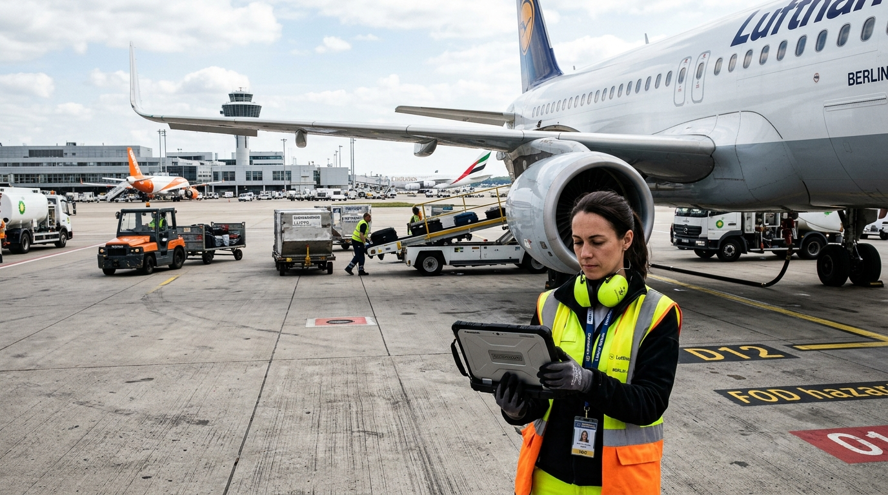
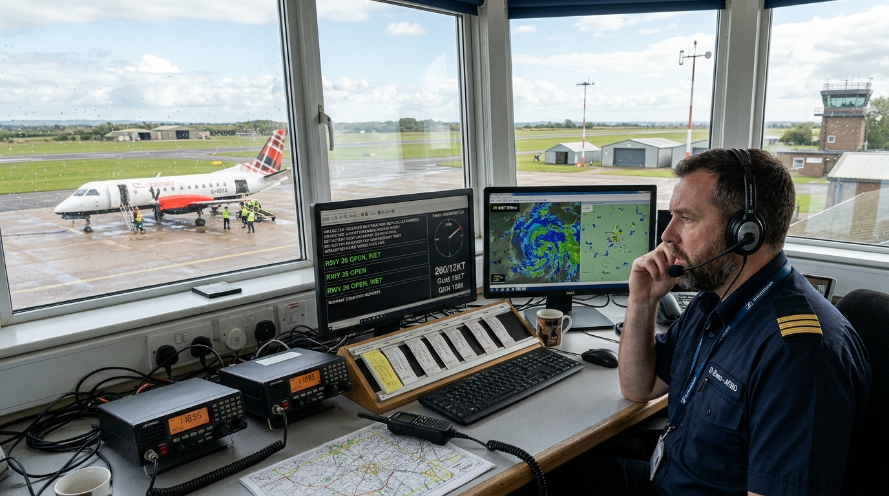

Landside, Airside, Flight Crew, Air Traffic Services & Civil Aviation Corps (TSEEAC)
Work in pairs. Select one headline prompt and discuss operational ramifications for 3 minutes:
European regional airports increasingly transition to centralized remote digital tower hubs, altering the traditional physical workspace of AFISOs and ATCOs.
Prompt: How do high-definition optical cameras and infrared tracking assist situational awareness?
Major European airlines partner with ground handlers to deploy semi-autonomous baggage belt loaders and robotic pushback tugs to combat peak-season ramp shortages.
Prompt: What safety responsibilities remain strictly with human Turnaround Coordinators?
Chocks-on marks the official arrival when wheels are secured. Chocks-off marks off-blocks departure when all ground servicing is complete and pushback begins.
Flashing red beacons indicate engines are running or imminent start-up, creating severe ingestion hazards and lethal jet-blast danger.
Catering hi-lift truck (servicing galleys) and ambulift / passenger boarding stairs (servicing main cabin doors).
Cause: 'due to', 'owing to', 'because of'. Consequence: 'consequently', 'as a result', 'resulted in'.
Aviation operations require seamless inter-agency handoffs across five distinct operational domains. Clear jurisdictional boundaries prevent safety gaps, misunderstandings, and runway incursions.
Passenger Service Agents (PSA), Security Screeners, Customs & Border Control, Terminal Duty Managers. Mandate: Passenger flows, document verification, baggage drop, and terminal security before the airside boundary.
Turnaround Coordinators (TRC / Red Cap), Ramp Agents, Baggage Handlers, Aircraft Marshallers, Refuelers, De-icing Crew. Mandate: Physical aircraft turnaround on parking stands, GSE movement, loading balance, and pushback.
Captain (PIC), First Officer, Cabin Crew, Flight Dispatchers (OCC). Mandate: Safe navigation, FMC setup, final walkaround, weight & balance release, and operational control.
Tower Controller (TWR), Ground Controller (GND), Approach (APP), En-Route (ACC). Mandate: Legal authority to issue tactical separation instructions and clearances on manoeuvring areas and controlled airspace.
AFISO, DGAC Safety Oversight Inspectors, Aerodrome Certification, Environmental Officers. Mandate: Essential advisory information at non-controlled aerodromes, regulatory audits, non-separation flight information.
| Operational Domain | Key Job Roles | Legal Jurisdiction & Scope | Critical Handover Interface | Core Spoken Verbs |
|---|---|---|---|---|
| Landside / Terminal | Passenger Service Agent, Security Screener | Public concourse to boarding gate. Enforces baggage weights, identity checks, and security access. | Passes final passenger manifest and special assistance counts to TRC. | screen, verify, check in, announce, board |
| Apron & Ramp Ops | Turnaround Coordinator (TRC), Ramp Agent, Marshaller | Aircraft stand servicing envelope. Coordinates parallel GSE, cargo hold loading, and refueler. | Hands signed loadsheet to First Officer; signals "all clear" to pushback tractor. | coordinate, supervise, load, marshal, push back |
| Flight Crew & OCC | Captain, First Officer, Airline Flight Dispatcher | Flight deck and operational dispatch. Ultimate command authority for flight safety and route release. | Requests departure clearance from ATC; confirms aircraft status with TRC. | calculate, program, inspect, cross-check, pilot |
| Air Traffic Control | Tower ATCO, Ground Controller, Approach Radar | Active runways, taxiways, and controlled airspace (Classes A–E). Separation authority. | Transfers taxiing flights to TWR; issues takeoff and landing clearances. | clear, instruct, separate, monitor, vector |
| Civil Aviation Corps (TSEEAC) | AFISO, DGAC Safety Inspector, Aerodrome Officer | Regional aerodromes (non-controlled), regulatory oversight, airfield safety compliance. | Broadcasts runway surface conditions, wind, and traffic information to inbound pilots. | broadcast, advise, audit, monitor, certify |
Examine the 6 authentic documentary photographs of aviation professionals on duty. In pairs, observe their operational environment, specialized equipment, and immediate duties. Practice describing their responsibilities aloud using B2 structures.


Professional aviation communication requires precise prepositions and modal structures. Avoid French false friends (chargé de, responsable de) and grammatical calques.
be tasked with + -ing
be responsible for + -ing
❌ responsible of
✅ The TRC is tasked with coordinating the turnaround.
have authority to + base verb
be authorized to + base verb
❌ have authority of
✅ ATCOs have authority to issue clearance instructions.
liaise with [peer / partner]
report to [hierarchical superior]
❌ report with
✅ The First Officer reports to the Captain and liaises with the TRC.
| Job Role | Common Spoken Pitfall (French Calque) | Standard Operational Pattern (B2 Spoken English) |
|---|---|---|
| ATCO vs. AFISO | ❌ The AFISO is responsible of giving orders to separate airplanes. | ✅ The AFISO is responsible for providing advisory traffic information, whereas ATCOs are tasked with maintaining separation. |
| Flight Dispatcher | ❌ The dispatcher has the authority of cancel the flight without pilot. | ✅ The flight dispatcher has authority to amend or delay the flight release in coordination with the captain. |
| First Officer | ❌ The co-pilot reports with the captain and is in charge to load cargo. | ✅ The First Officer reports directly to the Captain and is in charge of cross-checking the fuel balance. |
| Marshaller | ❌ The marshaller is charged to guide the plane into the gate. | ✅ The aircraft marshaller is tasked with guiding the aircraft along the lead-in line to the stop mark. |
| Security Screener | ❌ Security officers have the authority of confiscate any baggage. | ✅ Screeners have authority to inspect luggage and confiscate non-compliant hazardous materials. |
| DGAC Safety Inspector (TSEEAC) | ❌ The inspector is responsible about auditing airlines and pilots. | ✅ The TSEEAC inspector is tasked with conducting regulatory audits and verifying aerodrome certification. |
Build spontaneous communicative fluency by describing aviation jobs under strict constraints. Practice without relying on forbidden vocabulary.
Crisis Scenario: Stand Charlie-4 at 16:45. Rapidly deteriorating winter conditions with freezing rain. Flight ENAC-101 has 180 passengers onboard, while an inbound diversion reports a passenger medical emergency. Three competing bottlenecks threaten aerodrome gridlock. Coordinate multi-agency resolution:
| Complication on Stand | Interfacing Agencies | Safety & Operational Regulation | Negotiated Recovery Sequence |
|---|---|---|---|
| Freezing Sleet & Ramp Slippery | TRC, Marshaller, Runway Sweeper, AFISO / TSEEAC | Braking action below medium-poor requires SNOWTAM update and reduced towing speeds. | Halt pushback on taxiway Kilo; deploy chemical de-icer to stand surface before tractor connects. |
| Inbound Medical Emergency Divert | Tower ATCO, OCC Dispatcher, Aerodrome Emergency Medical Lead | Medical divert has absolute air traffic priority over scheduled departures. | Reassign Stand Charlie-5 to divert; clear emergency corridor for airport ambulance. |
| De-icing Rig Shortage & Slot Risk | De-icing Rig Operator, TRC, First Officer, CFMU Slot Lead | Holdover time begins at start of final anti-icing step. Takeoff must occur inside window. | Perform remote pad de-icing near runway threshold to prevent holdover expiration during taxi. |
Mastery of 18 high-frequency B2 aviation profession terms, word stress patterns, and continuous assessment benchmarks.
Legal geographic scope of operational authority.
Mandatory minimum distance between aircraft.
Ground servicing cycle between chocks-on and off.
Ground lead guiding aircraft using wand signals.
OCC flight officer planning routes and fuel load.
Co-pilot sharing flight management and walkaround.
Formal spoken authorizations issued by ATC.
Effective anti-icing fluid protection window.
Backup action plan prepared for emergency events.
Remote aircraft stand requiring bus transfers.
Regulatory compliance supervision by DGAC/EASA.
Advisory service without tactical separation orders.
Third-party handling or fueling company.
Operational communication link between agencies.
Pre-flight physical inspection of aircraft exterior.
Professional judgment during non-standard events.
Ramp operational stage causing downstream delays.
Tractor operation pushing aircraft into taxi lane.